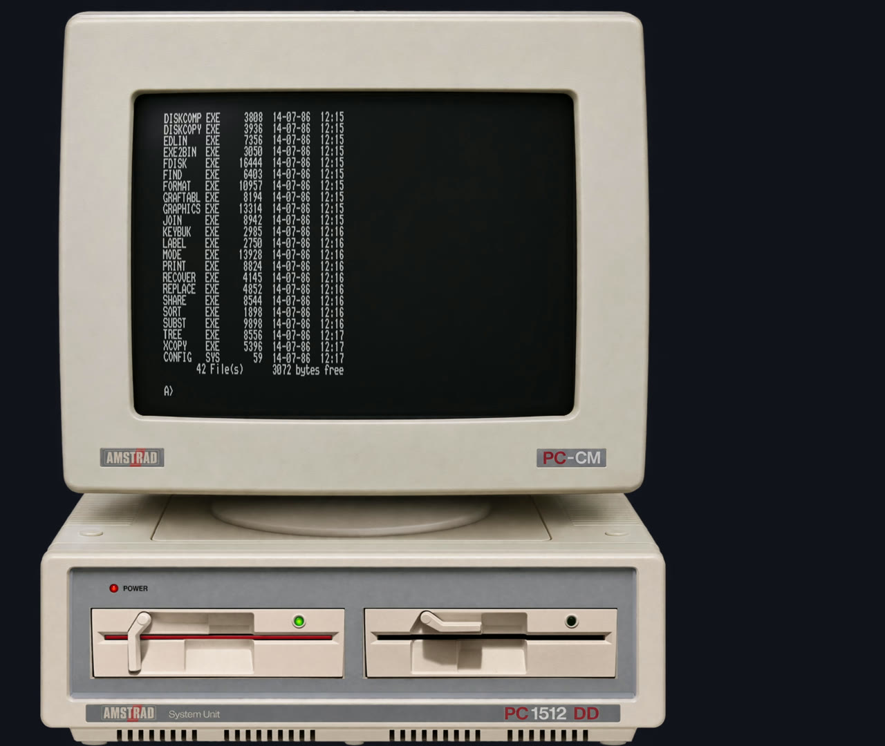
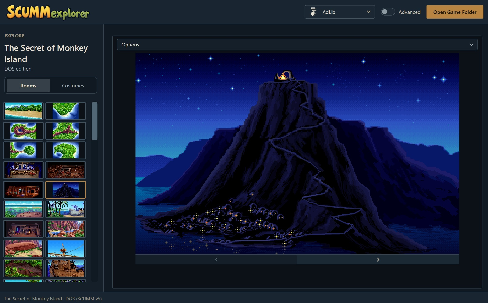
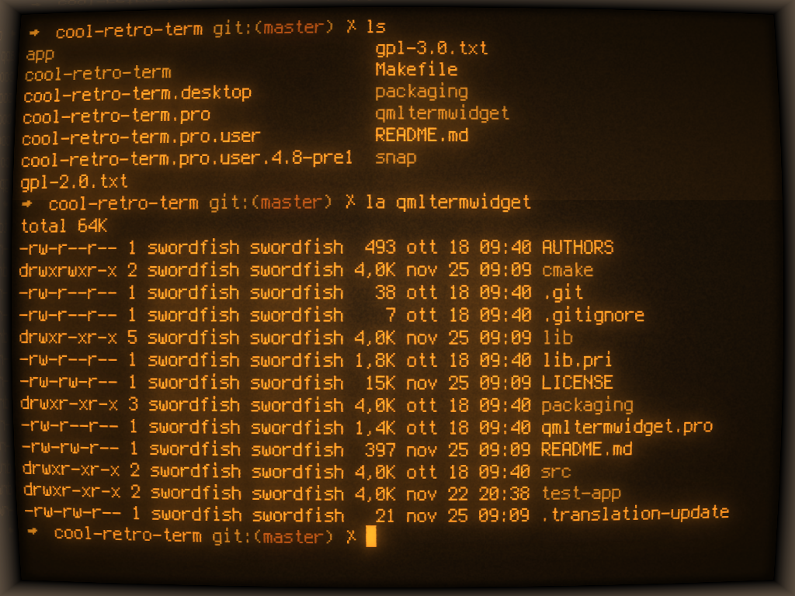
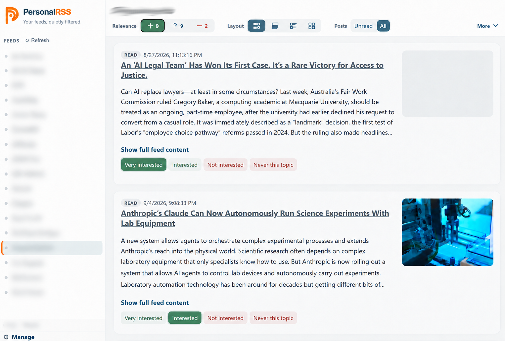
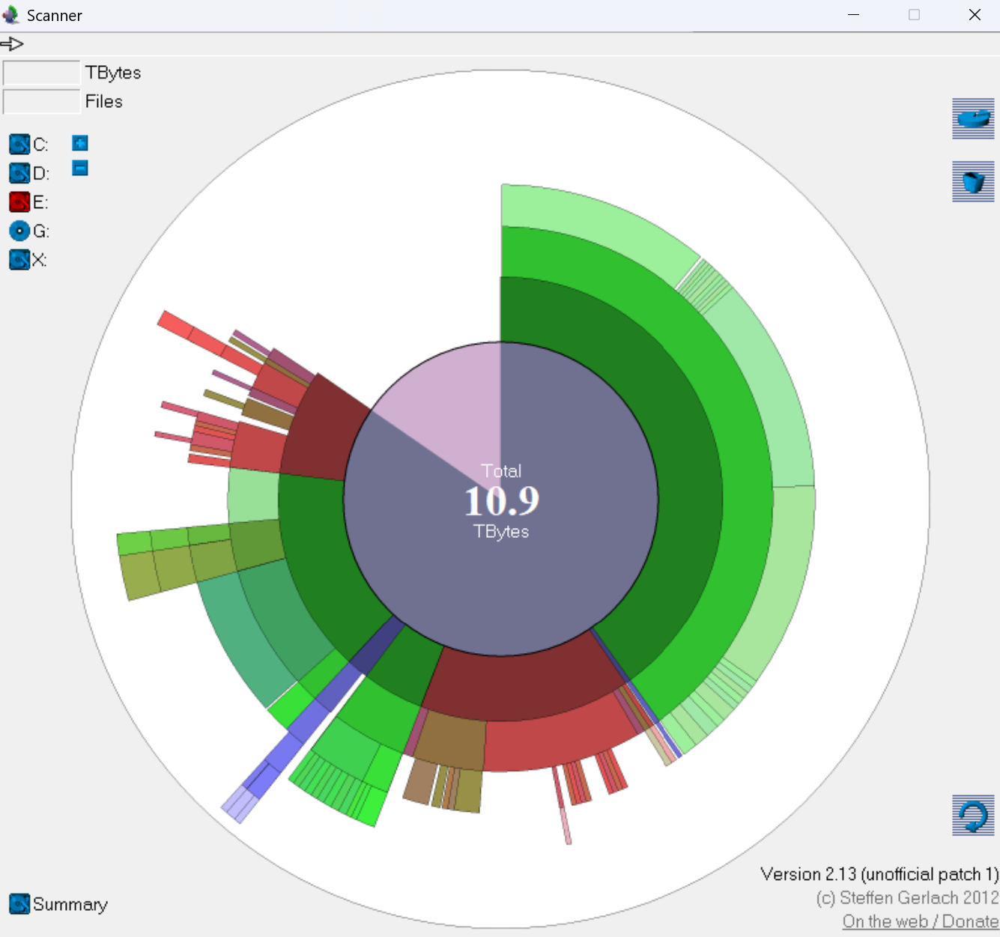
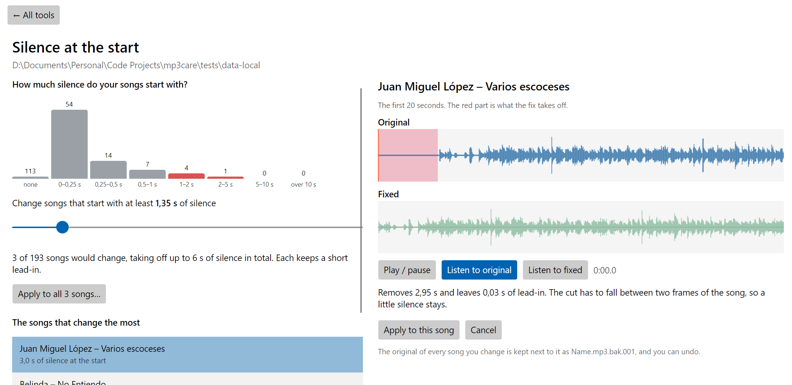
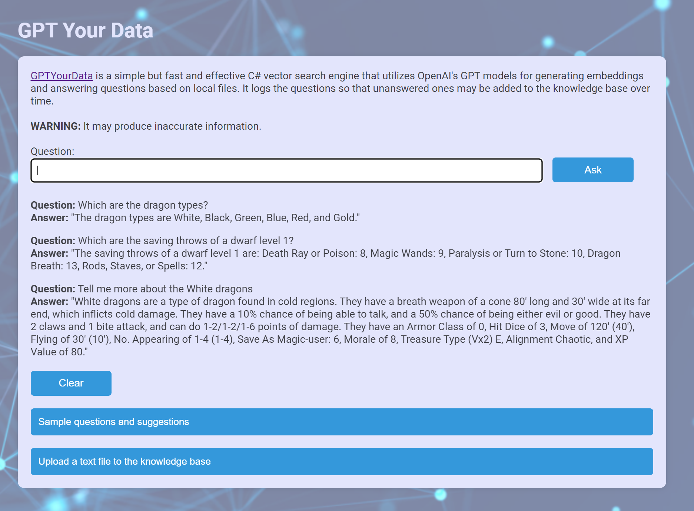

Homenaje a La Abadía del Crimen
Explore the abbey room by room, follow the characters through seven days, and see how the original game draws its manuscript. Available in Spanish and English.
View the showcaseI revisit the software I grew up with, build practical tools for today, and experiment with what AI can do next.
Explore the projects
The cabinet is the interface. Swap disks, switch monitors and hear the drives as they run.
View the spotlight projectOld machines, the games they ran and the sounds they made.
Explore the abbey room by room, follow the characters through seven days, and see how the original game draws its manuscript. Available in Spanish and English.
View the showcase
A longtime community favorite for organizing retro game collections. Batch-edit metadata, find missing media, and manage screenshots and videos.
View the showcase
An experimental workbench for exploring the artwork and scripts of classic adventures. Expect bugs in the current build.
View development showcase
A Windows fork that brings back the glow and curvature of the classic 1.1.1 terminal themes.
View Windows fork
Boot DOS or GEM and explore the PC1512 and PC1640, with working cabinet controls and period drive recordings.
View the showcaseRecordings of real floppy and hard drives used in 86Box and Amstrad PC Emulator.
Browse the sound archiveAn educational C# emulator for the original Game Boy. The source shows how the CPU, cartridge memory banks, four-shade display and sound channels work together.
Windows tools, small repairs and a few projects brought back to life.

A private RSS reader that learns what interests me and shows which feeds are worth keeping.
View the showcase
An unofficial fix for Scanner 2.13 so its disk-usage chart draws large folders correctly.
View patch
A Windows tool for finding unwanted silence, uneven volume, and tag or cover-art issues in large MP3 collections. The current build is still awaiting testing.
View development showcaseI revived a tool I first built in 2001 to explore old Microsoft product keys. The Windows app shows how a 25-character key is structured and decodes its fields for products such as Windows XP and Office 2000.
Experiments in machine learning, document search and voice interfaces.

I shared the prize in the qualitative category with a former NASA astronaut who founded a robotics company, a senior AI researcher from Japan, and an Austrian quantum physicist.
View the award showcase
Search local documents by meaning and ask questions about what they contain.
View repositoryA Windows desktop chatbot inspired by HAL 9000. I built it around GPT-3.5 with a configurable personality, spoken replies and conversations that save automatically as HTML.